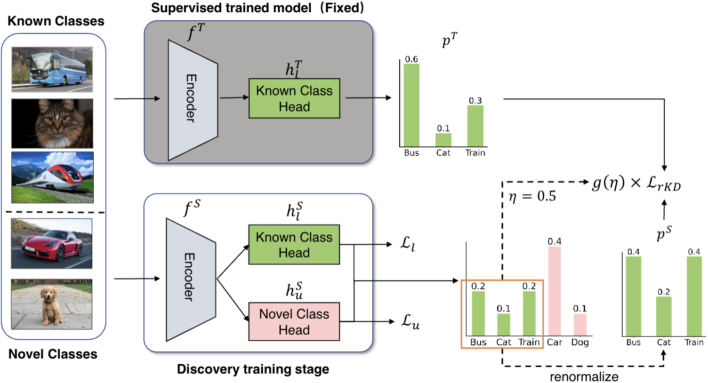

|
Chuyu Zhang I am a final year PhD at ShanghaiTech University, majoring in computer science and technology, advised by Prof. Xuming He. Previously, I recieved my B.S. in Electronic and information engineering from Wuhan University. Now, I am a research intern at Opencompass Team, Shanghai AI Lab. Working on evaluating and enhancing reasoning ability of LLMs. Email(ShanghaiTech) / CV / Github / Google Scholar / |

|
ResearchI previously focused on Open-World learning, particularly in the area of novel class discovery, with the goal of enabling models to cluster new classes autonomously. Currently, I am interested in Optimal Transport, foundational models and 3D\4D understanding. I am seeking a Post-doc position in Fall 2025. |
News
|
PublicationsNote: * indicates equal contribution. |

|
Dual-level Adaptive Self-Labeling for Novel Class Discovery in Point Cloud Segmentation
Ruijie Xu, Chuyu Zhang*, Hui Ren, Xuming He ECCV 2024 |
|
|
InternLM2 Technical Report
Zheng Cai, Maosong Cao, Haojiong Chen, Kai Chen, Keyu Chen, Xin Chen, Xun Chen, Zehui Chen, Zhi Chen, Pei Chu, Xiaoyi Dong, Haodong Duan, Qi Fan, Zhaoye Fei, Yang Gao, Jiaye Ge, Chenya Gu, Yuzhe Gu, Tao Gui, Aijia Guo, Qipeng Guo, Conghui He, Yingfan Hu, Ting Huang, Tao Jiang, Penglong Jiao, Zhenjiang Jin, Zhikai Lei, Jiaxing Li, Jingwen Li, Linyang Li, Shuaibin Li, Wei Li, Yining Li, Hongwei Liu, Jiangning Liu, Jiawei Hong, Kaiwen Liu, Kuikun Liu, Xiaoran Liu, Chengqi Lv, Haijun Lv, Kai Lv, Li Ma, Runyuan Ma, Zerun Ma, Wenchang Ning, Linke Ouyang, Jiantao Qiu, Yuan Qu, Fukai Shang, Yunfan Shao, Demin Song, Zifan Song, Zhihao Sui, Peng Sun, Yu Sun, Huanze Tang, Bin Wang, Guoteng Wang, Jiaqi Wang, Jiayu Wang, Rui Wang, Yudong Wang, Ziyi Wang, Xingjian Wei, Qizhen Weng, Fan Wu, Yingtong Xiong, Chao Xu, Ruiliang Xu, Hang Yan, Yirong Yan, Xiaogui Yang, Haochen Ye, Huaiyuan Ying, Jia Yu, Jing Yu, Yuhang Zang, Chuyu Zhang, Li Zhang, Pan Zhang, Peng Zhang, Ruijie Zhang, Shuo Zhang, Songyang Zhang, Wenjian Zhang, Wenwei Zhang, Xingcheng Zhang, Xinyue Zhang, Hui Zhao, Qian Zhao, Xiaomeng Zhao, Fengzhe Zhou, Zaida Zhou, Jingming Zhuo, Yicheng Zou, Xipeng Qiu, Yu Qiao, Dahua Lin Technical Report. Paper / Code |
|
|
CIBench: Evaluating Your LLMs with a Code Interpreter Plugin.
Songyang Zhang*, Chuyu Zhang*, Yingfan Hu*, Haowen Shen, Kuikun Liu, Zerun Ma, Fengzhe Zhou, Wenwei Zhang, Xuming He, Dahua Lin, Kai Chen. Submitted to NeurIPS 2024 Dataset and Benchmark Track. Paper / Code |

|
P2OT: Progressive Partial Optimal Transport for Deep Imbalanced
Clustering
Chuyu Zhang*, Hui Ren*, Xuming He ICLR, 2024 Paper / Code |
|
|
SP2OT: Semantic-Regularized Progressive Partial Optimal Transport for Imbalanced Clustering
Chuyu Zhang, Hui Ren, Xuming He Under Review Paper / Code |
|

|
Class-relation Knowledge Distillation for Novel Class Discovery
Peiyan Gu*, Chuyu Zhang*, Ruijie Xu, Xuming He ICCV, 2023 Paper / Code |
|
|
Novel Class Discovery for Long-tailed Recognition
Chuyu Zhang*, Ruijie Xu*, Xuming He TMLR, 2023 Paper / Code |
|
|
Cascaded Sparse Feature Propagation Network for Interactive Segmentation
Chuyu Zhang*, Chuanyang Hu*, Hui Ren, Yongfei Liu, Xuming He BMVC, 2023 Paper / Code |
|
|
Shape-aware semi-supervised 3D semantic segmentation for medical images
Shuailin Li*, Chuyu Zhang*, Xuming He MICCAI, 2020 Paper / Code |
Selected Awards and Honors
|
Professional Services
|
© 2023-2024 Chuyu Zhang